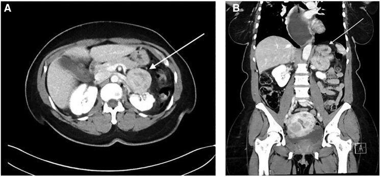

Ficha del catálogo
Feocromocitoma
- Sistema
- Urinario
- Modalidad
- TC
- Región
- Glándula suprarrenal
- Dificultad
- Avanzado
El feocromocitoma es un tumor de la médula suprarrenal productor de catecolaminas que se manifiesta con hipertensión, crisis de cefalea, sudoración y palpitaciones, aunque una parte se descubre de forma incidental. Puede asociarse a síndromes hereditarios, en cuyo caso es más frecuente que sea bilateral o de localización extrasuprarrenal. El diagnóstico se confirma con el estudio bioquímico de metanefrinas.
Técnica
La tomografía con fase simple y fases con contraste caracteriza la lesión y define su relación con las estructuras vecinas. La resonancia es útil en pacientes jóvenes, en el embarazo y en el estudio de tumores extrasuprarrenales, por su contraste tisular y por evitar la radiación. Los estudios de medicina nuclear con trazadores específicos localizan lesiones múltiples y metástasis.
Qué observar
- Masa suprarrenal habitualmente mayor de 3 centímetros con atenuación elevada en la fase simple
- Realce intenso tras el contraste, con frecuencia heterogéneo
- Áreas quísticas, necróticas o hemorrágicas dentro de la lesión
- Señal muy alta en secuencias potenciadas en T2 en resonancia
- Ausencia de caída de señal en las secuencias en fase opuesta
- Bilateralidad, multiplicidad o localización fuera de la glándula
Hallazgos
Se observa una masa suprarrenal de contorno redondeado que no cumple los criterios de adenoma rico en lípidos, ya que su atenuación en la fase simple es alta y no pierde señal en las secuencias en fase opuesta. El realce tras el contraste suele ser llamativo y la lesión puede contener zonas de degeneración quística o hemorrágica que la hacen heterogénea. En resonancia destaca por su señal muy elevada en las secuencias potenciadas en T2, aunque este rasgo no aparece en todos los casos.
Perlas
Ninguna característica de imagen es por sí sola diagnóstica y la confirmación es bioquímica. Ante una masa suprarrenal con alta atenuación en fase simple y realce intenso conviene sugerir el estudio de metanefrinas antes de plantear una biopsia, porque el muestreo de un feocromocitoma no reconocido puede desencadenar una crisis hipertensiva.
Diagnóstico diferencial
- Adenoma suprarrenal
- Presenta atenuación baja en la fase simple por su contenido lipídico y pierde señal en fase opuesta.
- Carcinoma suprarrenal
- Suele ser voluminoso, muy heterogéneo, de contornos irregulares y con invasión venosa o metástasis.
- Metástasis suprarrenal
- Aparece en el contexto de un tumor primario conocido y con frecuencia es bilateral.
- Hemorragia suprarrenal
- Es una lesión que no realza, con antecedente de traumatismo o de anticoagulación, y disminuye en los controles.
Simuladores
- Pliegue gástrico o asa intestinal que remeda una masa suprarrenal izquierda
- Varices o vasos tortuosos en el lecho suprarrenal
- Bazo accesorio en la celda suprarrenal izquierda
Por modalidad
- TC
- Caracteriza la atenuación en fase simple, el realce y la relación con los vasos, y localiza tumores extrasuprarrenales.
- RM
- Aporta señal alta en secuencias potenciadas en T2, evita radiación y es preferible en jóvenes y en el embarazo.
Protocolo
Tomografía suprarrenal con fase simple de cortes finos para medir la atenuación, seguida de fase con contraste y adquisición tardía para valorar el lavado. La resonancia incluye secuencias en fase y fase opuesta, potenciadas en T2 con saturación grasa y estudio dinámico. El uso de contraste yodado en el estudio de estos tumores se considera seguro en la práctica actual, sin necesidad de preparación específica por ese motivo.
Clasificación
Errores frecuentes
- Aplicar criterios de adenoma a una lesión que no los cumple y no proponer estudio bioquímico
- Indicar una biopsia percutánea sin descartar antes el exceso de catecolaminas
- No revisar el resto del retroperitoneo y la pelvis en busca de lesiones extrasuprarrenales

feocromocitoma suprarrenal catecolaminas realce intenso lavado metanefrinas incidentaloma